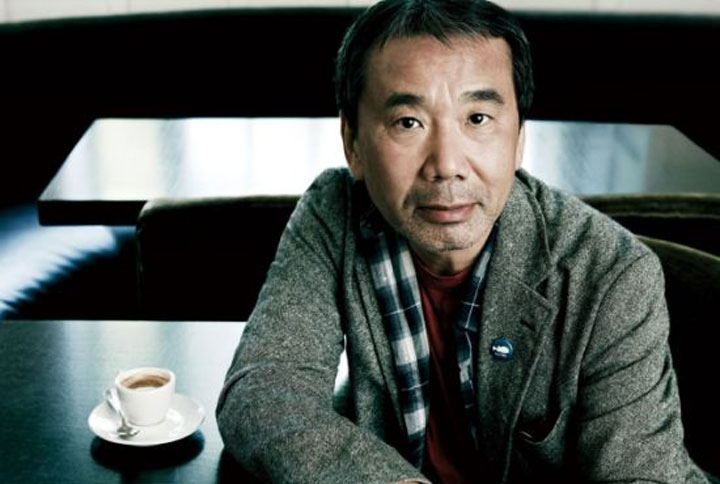
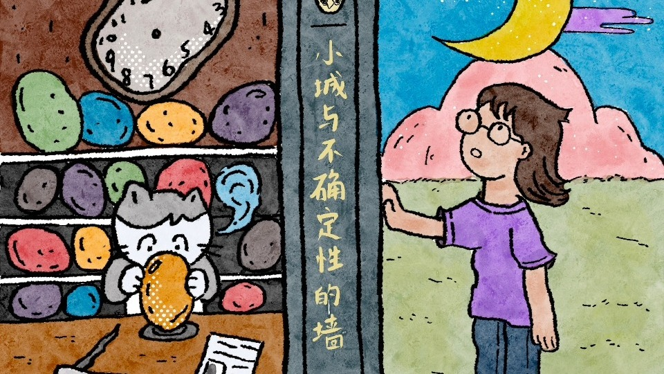

Chapter A · 人生经历
从酒吧的吧台
向下滚动
从酒吧的吧台
到世界尽头
他不是一个躲在书房里的作家。七年的吧台、每天十公里的跑道、地震之后的地铁站—— 这些具体的地方，最后都变成了小说的现场。下面按年份走过一遍，再看他怎么把日子过成工作。
京都出生
芦屋长大
国分寺开店
他不是一个躲在书房里的作家。七年的吧台、每天十公里的跑道、地震之后的地铁站—— 这些具体的地方，最后都变成了小说的现场。下面按年份走过一遍，再看他怎么把日子过成工作。
以下按年份排列，只记录与写作直接相关的节点。有些年份看上去什么都没发生，其实那几年才决定了后面的一切。
出生在京都伏见，不久随家人搬到兵库县芦屋市——战后关西的高级住宅区，安静、体面，离海不远。 父亲是国语教师，家里书多，饭桌上也常摊着书。少年时代他读《海底两万里》、读卡夫卡、读菲茨杰拉德， 也听爵士乐。他后来承认，自己并不是成绩出色的学生，只是读得杂、读得多。 这些名字后来反复出现在小说里：不是引用，是习惯。
读的是演剧科，课却常常不去，人几乎每天都泡在电影院、唱片行和酒吧里，也开始写一些没人看的东西。 学业一拖再拖，他读了很久才毕业。那段"不上课的日子"没有白过—— 后来《且听风吟》里那种无所事事的语气，就是从这几年里长出来的。
和妻子阳子在国分寺开了一家爵士酒吧，取名 Peter Cat。白天卖咖啡，晚上卖酒， 墙上挂唱片，唱机里放查特·贝克、迈尔斯·戴维斯、比尔·艾文斯。为了还债，他一做七年。 打烊之后，客人走了，他趴在厨房的桌面上写小说—— 《且听风吟》的前几页，就是这样写出来的：白天招呼客人，凌晨写一千字。
二十九岁那年动笔，写完把稿子寄去《群像》杂志，拿到第 22 届群像新人文学奖。 评委之一的丸谷才一给了很高评价，说这部小说有"一种新的声音"。 日本评论界从此有了"村上春树"这个词。处女作只有四十来节，短句多，情节少—— 那种刚开口就收住的语气，他此后一直没丢。
第二本书出版后，他把店转手，决定专职写作。他的说法很朴素："如果写得下去，就写下去；写不下去，再回来开店。" 这个决定当时更像一次赌博——没有稳定收入，也没有单位，只有一张桌子和一个还没证明的才能。
前者拿到野间文艺新人奖，后者拿到谷崎润一郎奖。这两本书确立了此后一直贯穿的两条线： 一条是侦探式的追寻，一条是双世界的平行叙事。 《世界尽头》是他第一次把书写到那么长——写完那一阵，他说自己像被掏空了一次。
他带着妻子旅居欧洲，一住三年。在异国的房间里，他写完了《挪威的森林》的前半部—— 一本关于日本六十年代末的小说，却是在地中海边写的。 距离感让他第一次看清，自己国家的年轻人到底是什么样子。
一部彻底写实的青春小说，上下册在几个月内卖出数百万册，日本的"村上现象"从这一年开始。 他自己对这种畅销一直有点困惑：一本写丧失与死亡的书，为什么会有那么多人排队买。 也是这本书，让许多中国读者第一次认识他。
他到普林斯顿做访问研究，一边教书一边写《奇鸟行状录》的前半。离开日本的距离感， 让他开始更清楚地看自己国家的历史——诺门坎、满洲、战后一代人的沉默， 都是从这段距离里浮出来的。
1 月 17 日的地震毁掉了他故乡一带，3 月 20 日的地铁沙林事件震动了整个日本。 他回国做了大量采访：受害者、地铁员工、医生、宗教团体成员，写成纪实作品《地下》。 同年他开始写《神的孩子全跳舞》，用几个短篇处理地震留下的空洞—— 不解释，只让人物在废墟边继续生活。
这本书让他拿到以卡夫卡命名的文学奖，也拿到世界奇幻文学奖。 此后每年诺贝尔奖公布前，他的名字都会被念一遍，博彩公司的赔率表上他常年在列—— 他本人几乎不回应，只说写作和这些事情无关。
《1Q84》上市十天卖出近百万册，书店门口排队的照片上了新闻。同年他赴耶路撒冷领取文学奖， 在演讲中说："无论墙多么正确，鸡蛋多么错误，我都会站在鸡蛋这一边。" 这句话后来被印在无数海报上，成了他流传最广的一段话。
隔了七年，他交出两卷本的长篇。小说里有一幅藏在阁楼的画， 有一段被战争压住的历史——书里写到南京，在日本引来一阵攻击，他没有收回。 也有一句后来被反复引用的话："哪怕云层再黑再厚，背面也银光闪闪。"
七十四岁，他把四十年前发表的一篇短篇重新写成一千二百页的长篇。 还是那座被高墙围住的城，还是失去影子的人—— 只是这一次，他让主人公从墙里走了回来。四十年前他把"我"留在城里，四十年后他把人接了出来。
如果只看作品，会以为他活在小说里；看他的日程表，才知道这个人是靠体力和重复过日子。


三十三岁那年，他关掉酒吧、开始专职写作，也同时开始跑步。理由极其朴素： 写长篇小说是需要体力的。一天坐四五个小时，一年一本，连续几十年， 靠的不是灵感，是一副能撑住的身体。跑步恰好是一项不需要对手、不需要场地、随时可以独自完成的运动—— 这和他写作的方式一模一样。
日常是每天十公里，一年跑一次全程马拉松。后来他还跑过一次一百公里的超级马拉松， 跑完之后有很长一段时间不想再提这件事，只把距离收回到了十公里。 他写过一段意思很直白的话：跑步的时候不想情节，脑子空着，身体在动； 反而是那段空白，让第二天的文字有了地方可放。
这段经历写成了随笔《关于跑步，我说的其实是……》。书里没有训练计划， 只有一个人在路上的自言自语——关于衰老、关于坚持，也关于"至少这件事我可以自己决定"。 他还说过，跑步时听的音乐会决定那天的状态，所以那台随身听里的歌单，翻了十几年。
另一个习惯是作息：凌晨四点起床，写四五个小时，下午跑步或游泳，晚上听唱片、早睡。 他在《我的职业是小说家》里把这件事讲得很平淡——才能是主观的东西，说不清； 但每天坐在桌前这个动作，是可以重复的。把不可控的部分交给运气，把可控的部分做成习惯。

这一节的视频都来自 B 站，点封面即跳转到原页面。主视频讲他晚年的写作与那座城， 下面的讲座由《1Q84》的中文译者施小炜主讲，从作家的经历讲到这本书的由来。

B 站 50:29五十分钟的长视频，把《世界尽头与冷酷仙境》和晚年的《城市及其不确定的墙》放在一起看： 影子、本体、那堵墙，以及一个作家怎么在四十多年里反复回答同一个问题。 适合先看完这页的年表，再点开看看别人怎么讲这条线。
B 站 · 2025-07 · 50 分 29 秒 · 点封面或 在 B 站打开 ↗
《1Q84》中文译者施小炜在上海杉达学院的课堂录像，从作家的经历讲到这本书的由来， 三讲连着看，比短视频更适合课前补背景。
B 站 · 2018-06 · 学术讲座三十七秒的短片，把他那句自我定义讲完了——先是一位跑者，其次才是作家。 长跑坚持了三十年，跑步的意义最后写成了那本随笔。
B 站 · 2022-09 · 0:37延伸阅读（站外文章）： 中新网《村上春树与跑步》 · 中新网《25 年间从未停止马拉松式长跑》